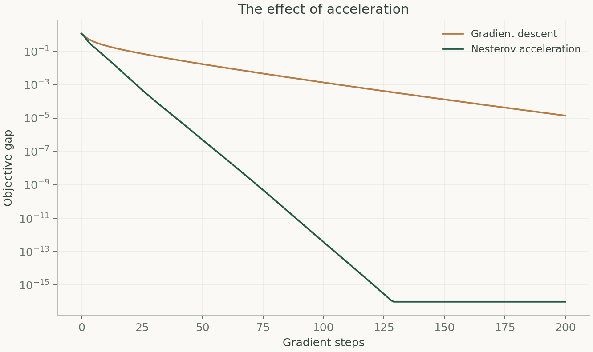

Learning theory
How much data is enough? Generalization, concentration, and the assumptions behind statistical guarantees.
Hello, I'm
ML theory × Information extraction
I’m Kwame Mensah, from Rwanda. My research interests are in machine learning theory and information extraction, particularly generalization, optimization, named entity recognition, and relation extraction. I enjoy connecting mathematical ideas with small, reproducible experiments and studying how to extract reliable structured information from text.

From learning guarantees
to structured language understanding.
How much data is enough? Generalization, concentration, and the assumptions behind statistical guarantees.
How do algorithms reach a solution? Convexity, convergence rates, and the effect of acceleration.
How can text become reliable structured data? Entity recognition, relation extraction, and evaluation grounded in textual evidence.

A finite hypothesis class, a known data distribution, and a direct comparison between empirical risk and a uniform-convergence bound.
Explore example
Gradient descent and Nesterov acceleration on the same quadratic, with known curvature and an exact reference solution.
Explore example
A transparent baseline for finding entity mentions and relations in text, with explicit annotations and exact-match evaluation.
Explore exampleEducational examples, with code, tests, and synthetic data. Each figure is generated by the accompanying experiment.
All public repositoriesExplore how the baseline extracts entity mentions and relations. Compare its output with separately authored annotations, including examples it misses.
Read the evaluation protocolAmara Okafor works at Cedar Labs in Kigali.
Fixed lexicon and patterns · 12 synthetic examples · No trained model
Short explanations, with the details left in.
Browse the repositories, reproduce an example, or open an issue with a question about the code.
From Nowhere to Anywhere.
Start with an experiment